空間與連接
by Ando
這篇文章會講到有關黑棋應該要如何發展攻勢。它主要是針對高階棋友，初階棋友也可以從這裡學到一些想法，但是對於這些棋友
過去10年來，我試著去找這些問題的答案，什麼問題呢--"黑棋要如何下出沒有直接贏的攻勢的位置？如何把黑棋的組織發展成勝利？如何逼迫對手下弱棋？什麼是可能贏棋的狀況？"
經過這些年來，我的想法已所改變。一開始，我相信用最好最強的棋去直接積極的攻擊就可以贏棋了。我甚至還能用一些棋局來證明。每當我持黑時，我都以直接的方式趁機組織成好的型態。之後呢，我的對手都無法承受他們因容易犯錯而讓我贏的壓力。如果你們有連珠棋譜的資料庫，那麼你們可以發現我在1989~1993年間下的棋都很快，當我持黑的時候通常都沒幾子就贏了。從1993年開始，我有機會在世界比賽中正式參賽。在這些比賽裡，我的對手都很強，有時對於跟他們下棋我的直接攻擊都沒用，我感到震驚而且沮喪。那些棋手都知道要怎麼防守，不管我攻得如何的強。我那時開始了解如果我想成為一流的棋手，我必須改變我的戰術。我開始去尋找一些新的技巧以發展我持黑時的攻勢。然而，我並沒有成功，我根本找不到堪稱好的"公式"或"想法"。而在1993~1997年間，我開始偏好白棋，因為我對於持白的戰術已經相當了解。比方說，在1994年的歐洲冠軍盃，我有9盤持白而只有一盤持黑。而終於，在1997年的時候，我持黑的戰術已經差不多ok了。我在我的棋風上做了一個很大的改變--我以"空間和連接"來取代"直接和積極攻擊"的觀念。
當然嘍，在那時候，這只是個觀念，我沒有給它取名，我只有在這裡講出來而已。而我下的棋也開始變得比較多手了，但從另一個角度看來，卻有了更好的勝率!!
從我的觀察所得的結論--
1.如果白棋不犯任何錯誤，那麼黑棋將贏不了。
2.如果黑棋過了25手還贏不了，那麼黑棋就不可能僅靠某區的強攻而得勝。
3.當沒有多少空間的時候，即使黑的有很多的攻擊材料白棋也不必太擔心；因為由於不顧一切的進攻而導致空間的缺乏將使黑棋經常性的落敗。
這些結論是由我自己好幾百局以及其他頂級棋手的局所建立的。第一個結論蠻簡單的，我相信大家都已經了解。從這點我們可以了解到定石書的重要!!第二個結論是花了我好幾年才完成的。我看到很多最後超過25手的棋局，但黑棋很少能夠沒有其他附加的幫忙而獨立獲勝的。然而，很多強的棋手仍然是用很直接的攻擊而最後導致失敗，而且他們從來也沒有從中去探討失敗的原因，然後還持續一盤接一盤的下。以前那個時候我了解到僅靠單一地區發動攻擊是錯的而且無效，但我卻不知道除了這樣之外，我還能做什麼。第三個結論花了我最長的時間。很久以前我知道盤邊的重要性，但我卻不曉得那麼小的空間竟是白棋防守的要點所在!!白棋可以很輕鬆的讓黑棋往那些窄的地方進攻，而且不必管他有多數巨大的攻擊，因為黑棋將由於地方不夠而宣告攻擊失敗。很快地，我下起白棋變的很厲害了--對於盤邊有很好的感覺而且還能挑釁對方往盤邊攻擊。我知道黑棋一定會攻擊失敗的，因為空間不夠。
我把這些結論放在一起--"我不能期待對手在開局時就會犯愚蠢的錯誤。我必須要藉著別的地方的空間來增加我的攻擊力。我必須相信我有足夠的空間可以來贏。"從第一個結論引申到第二個：強的棋手不可能在一開局就讓我贏，所以一盤棋最少一定會超過25手。那也表示我必須用更多更多的地方來組織自己的攻勢，因為在棋盤上超過25手時要單靠某一區來贏棋是不可能的事。所以，我知道了要把各區連接起來的重要性!!沒錯，就是連接!!它就是我要講的要點!!我們總是想到像是3-3.4-3這一類的連接點，但我們絕少去想整個攻擊區域的連接點。現場我確信攻擊區的連接是導致勝利的關鍵。但不是只有連接，空間也是很重要的。假如沒什麼空間或靠近別人的棋子時，我所講的連接點是起不了什麼作用的。所以，空間和連接都很重要。記住，空間和連接!!
聽起來似乎很容易，但沒有實際練習是很難真正了解的。因此，我將藉著一些棋局來闡述它。
第一例下方左圖是典型的瑞星開局，到22止都還很正常。黑棋可以試著在棋盤上任意一個位置展開攻擊，因為它有很多的攻擊材料。然而，那些攻擊都還有一些問題。23手下哪最好呢？如果黑棋試著在下方和右邊攻擊，白棋只要小心防守就沒問題。那麼，左上邊怎麼樣？我們第一眼感覺g11好像不錯，因為白若24-i11，那麼25-e11。不過，我們在看一下，就可以發現白棋並不必去塞在跳三的中間，只要擋左邊24-f11。然後呢？黑棋好像可以連接，以下：25-k11，26-i11，27-k12，不過白上擋28-k13活三，將中斷黑棋等一下要下j13，L11的計劃。
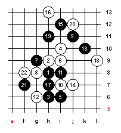
所以，上方的攻擊仍無法直接贏，因為白棋有活三來中斷。那麼，有什麼方法可以使黑棋持續攻擊而不必去管白棋的活三呢？嗯，如果黑棋有e8這一子的話!!假如有e8這一子，那麼在白棋k13活三的時候，黑棋是V.C.F衝勝!!
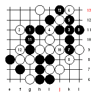
那麼，如何下到e8而黑棋仍然保有先手利呢？黑棋需要用到下面和左邊的資源來連接到e8這一點。現在23-e8就太早了，因為黑棋左邊仍過於被動不夠強，而且白棋可以積極的下在24-g11，然後黑棋就麻煩了。
這手e8關鍵子必須要一步一步小心的來連接。黑棋必須要在下方落子而不讓白棋在上面有任何積極佈局的機會，像是g11。假如黑棋下的太弱，一點也沒有攻擊力時，白棋馬上可以在右邊落子，就像是L7這一點或是其他的好點。
黑要怎麼在左邊找到有效的點呢？這裡沒有任何公式可尋。棋手們必須得在這裡想一些棋。23-f5怎麼樣？看起來不錯，但實際上，黑棋很快就攻不出去了，所以白棋可以下在24-L7。那麼23-e5又如何呢？黑棋在24-L7之後有沒有任何持續的攻勢？嗯，有的，25-g5。白唯一好防26-h4，避免黑等一下27-e7的V.C.F。但是以26-h4而言，黑棋仍然攻擊，如：27-d5，28-f5，29-d4(如下圖)。在23-e5這一手裡，黑棋可以在左邊持續活動力。所以，這告訴我們，白棋必須要應一手，不過，下哪好呢？
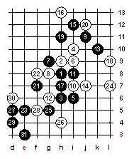
我們試想白棋已經看到黑e8的連接而且試著要破壞黑下方到e8的連接。那麼24-e7看看。嗯，e7是個破壞的好點，而且黑棋再也無法連到e8了。不過，現在黑棋不必去連接e8了，因為在24-e7之後，黑棋在面可以直接勝了!!
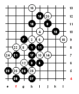
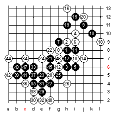
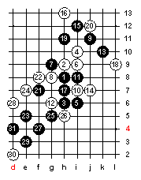
就如我們所看到的，白棋不能簡單地24-e7，因為黑棋下方太強了。白棋必須要找出其他的24手。由於黑棋e5和h5的連接實在太強的原因，白棋24-g5來破壞黑的型似乎比較好點。在世界盃裡，這一手棋Stefan
Karlsson一個人就下了3次。他相信這一手24th足以破壞黑棋的任何進攻。但其實黑棋仍有很好的機會可以連接到e8。25-g4最強!!在這裡，對於這些連接點，白棋是相當的危險，所以白棋得要26-h5。不過接下來從圖裡我們可以知道黑棋是一路追勝。應該沒有更好的26手了。如果26-j5，27-e6即可。
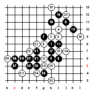
最後我們看到，白棋被迫26-h4。現在呢，黑的還不能直接下27-e8，因為28-e7，29-f6，30-j5，然後白可勝。因此，27-f6必須先下。白的要d4應一手，不然下面會輸掉。而最後呢，黑棋終於有機會連接到e8了，而且還逼迫白棋必須要在e7或d7裡選一點去防守。
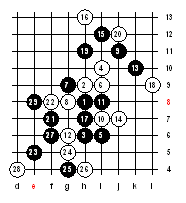
這裡有一個圖例是有關白30-d7企圖要封鎖黑棋下面攻勢的變化。而這一變呢，黑棋在可以輕鬆追勝。那如果30-f9則31-e6，32-e7，33-f5，34-h3，35-c6黑勝!!這一圖證明黑棋在29-e8以後，在左邊有足夠的力量可以得勝。所以，白棋得要在d7或e7應一手。而終於黑棋下到了連接下面和上面的關鍵子e8。也因為有了e8，白棋不可以32-f11。33以後，黑勝!!
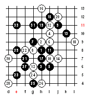
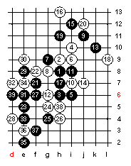
這一個例子或許很難，但它卻說明了連接子的重要性!!有時候，一個連接子可以使得看起來沒什麼的攻擊取得勝利。
現在呢，我要告訴你們一個有關黑棋如何使用空間攻擊的例子。我們來看看世界盃裡的一盤比賽，Soosyrv v.s Sagara。
疏星開局，Ants
Soosyrv持黑，在22手以後，ants已經取得先手了。不過黑棋的型還不很強。那要怎麼辦呢？ants用"空間"的觀念，他23-i5，準備把勢力延伸到其他空間。像這樣的棋黑必須要很小心而且也得確信可以連續一直佈子，儘管白棋在其他地方積極佈局都沒用。而在這局呢，這點是沒問題的。假如白24在上面佈子，那麼黑棋可以25-h5或25-j5，有VCF的攻擊。
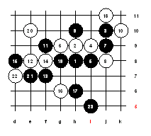
往空地拉劍是擴展空間最強的方法。請注意這23手，黑棋只有一條活2，然而，黑棋可以下在像23-h4(2條線)或23-h7(3條線)。不過，我們要記住"空間的發展遠比有多少條線來的重要"這個觀念。如果23-h7一次做3條劍的話，白棋將可輕鬆的封鎖黑棋的一切攻勢。記住這一點，"沒有空間，再多的劍都沒用"。
由於i5這一擴展空間的好手，在白棋下一步防守時，黑棋可以有很多攻擊路線來選擇。通常呢，黑棋幾乎可以確定白棋會防哪裡，而這也對黑棋持續攻擊的計劃有所幫助。在這局裡，我們可以簡單的臆測到白會下24-h4。而黑也早已準備好要下25-j5了，j5也是另一個擴展空間的好點。"空間發展"這個想法，可以給黑棋足夠的空間，而且也可以對白棋的防守點保持適當的距離(不是在太裡面的位置)。看看25-i6，那不是好的下法，因為它沒有足夠的空間而且白棋可以封死黑棋。也就是說，假如黑25-i6的話，那麼白棋會在黑棋的旁邊落子，26-j5。所以，25-j5是最強的。如同之前所說，很容易可以猜到白棋會守哪裡，28-i6。"空間發展"的戰術一直逼著白棋下出弱棋，就像28-i6這種在裡面的棋。現在，黑棋已經完成控制了整個空間，而且也已經到了可以拉劍的時候了。看看29、31。黑棋不但控制了空間還做出好幾條線了。如果你有去比較23-h7一次做出三劍這一手棋的話，你看看黑棋的力量現在有什麼不同沒有？現在黑棋的線都是很有用的，因為有很多的空間等著它們去發展。
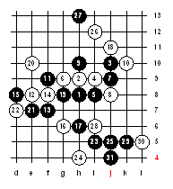
然而，好的棋手要儘可能的在下出像這一局29、31的攻擊手之前計算出所有可能的變化。Ants他計劃35-k8暫停自己的攻勢。而在36-k7之後，黑棋就直接攻勝了。如果40-h11，則黑41-c7有兩條V.C.F，這也是一個很棒的連接點。
依我看來，如果黑棋的23和25手下在別的地方，那麼白棋一定可以沒什麼大問題的把黑棋守住。所以，有時"空間"才是贏棋的唯一途徑。
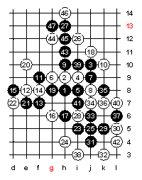
這裡還有一個有關"空間和連接"的棋局。大多數的人應該都已經看過這局了，那是我跟中村茂的第三局。一直到26為止，都還很平和，沒有任何空間發展的機會。事實上，黑棋的第23、25只是空間發展前的準備手，因為空間發展的棋通常沒有V.C.F的威脅，所以，黑必須確信白在黑棋下出這樣的棋的同時，白沒有任何可以積極進攻的手段。所以黑的第23、25手也是在削減白棋的型。27-g11可說是最好的一手。它有2個用意。第一，它對於黑棋的發展給予絕佳的空間。第二，它是在遙遠的連接點前的第一步，也就是黑若能連接e5和j12就能得勝的關鍵點。
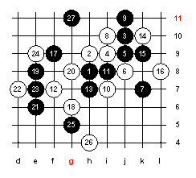
通常空間發展的棋不會做出很多劍，而且通常只有一條線。我要再次提醒各位，多少劍不是那麼重要。空間才是絕對的。一旦有了空間，等一下就會做出很多條劍出來。而且那些劍都是強而有力的。中村茂未注意空間的力量然後它下28-i11。他的想法很明顯。他認定我仍會繼續小心的塞住他的死三而下29-i12，然後他就可以30-g12了。
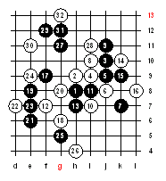
黑棋應當不能跟著對方的想法而應該繼續尋求空間的發展。而我也這麼做了。我下29-f12。這是另一個空間發展的棋。這個時候，它有兩路，而且很強。黑棋一步一步地往左下方來靠近了。而白棋也30-e11試著來破壞連接;不過現在黑棋有一個相當好的棋31-g12，它提供了很多條路可以發展。白的32-g13是在意料中而且也和邏輯。結果呢？黑棋控制了空間的優勢。
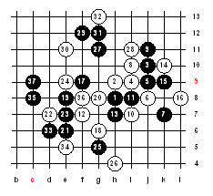
而由於空間的發展，黑棋有了更多有用的攻擊線。然而，有時光是空間發展還不夠。還需要一些額外的連接點。所以我繼續想著連接下面到上面的棋。我下33-d6逼白下34-e5。現在，我已然有了貫通f8的連接點了。但似乎還不是很有用。我沒有任何的好處。我需要更多的連接，即使犧牲再多的線我也要找到一個好的連接點。35-c8就是這樣的棋，在36-f8之後黑棋的三條劍不見了。但是黑棋不需要那些線，它只要d12這一個連接點。37-c9有V.C.F。不管白棋怎麼阻止黑棋的V.C.F，黑棋都有機會去下到B10或c11這2個連接點中的其中一點，然後就贏了，下e13、j12、h12、i13。從這局我們可以看到，黑棋使用了"空間發展"和"連接點"的戰術而最後得勝。
2007年的世界盃冠軍吳鏑，在奪冠後的自戰解說表示，Ando這篇的變化有誤
左圖27在Ｇ的位置白可勝，正確是下在Ａ位
而這個黑23的唯一防是24-H4變化的
其中一個變化就是吳鏑的實戰譜
而黑21改下F8據說可以必勝，文章的變化雖然有誤，但仍瑕不掩瑜。